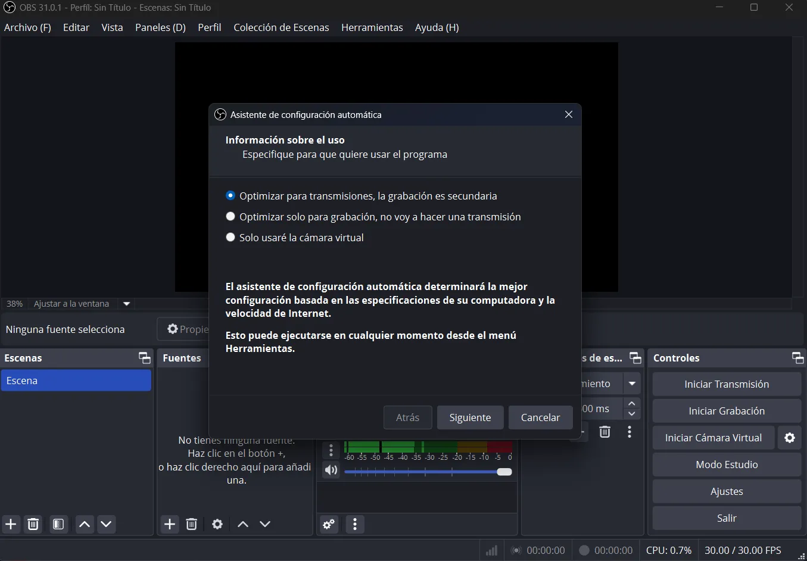
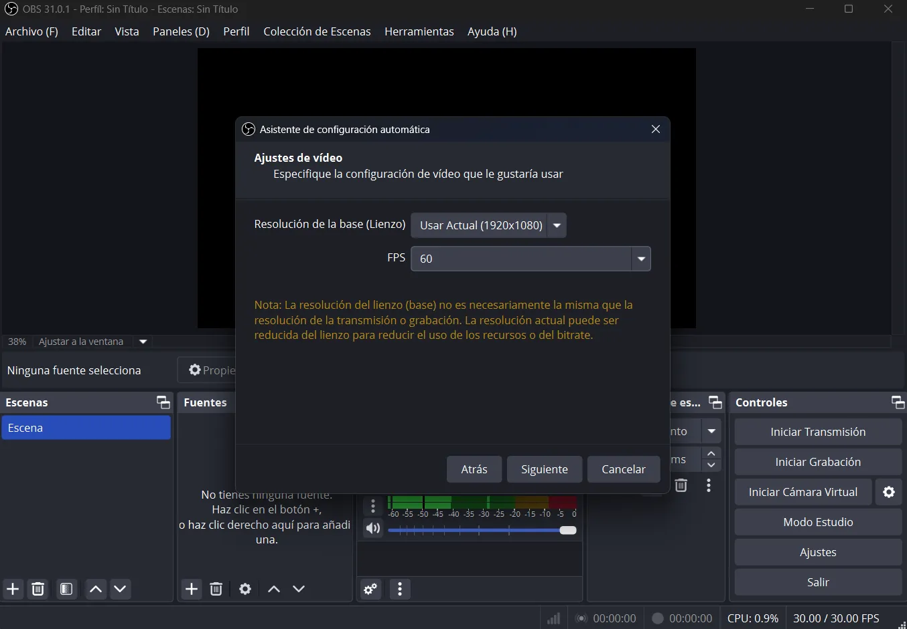
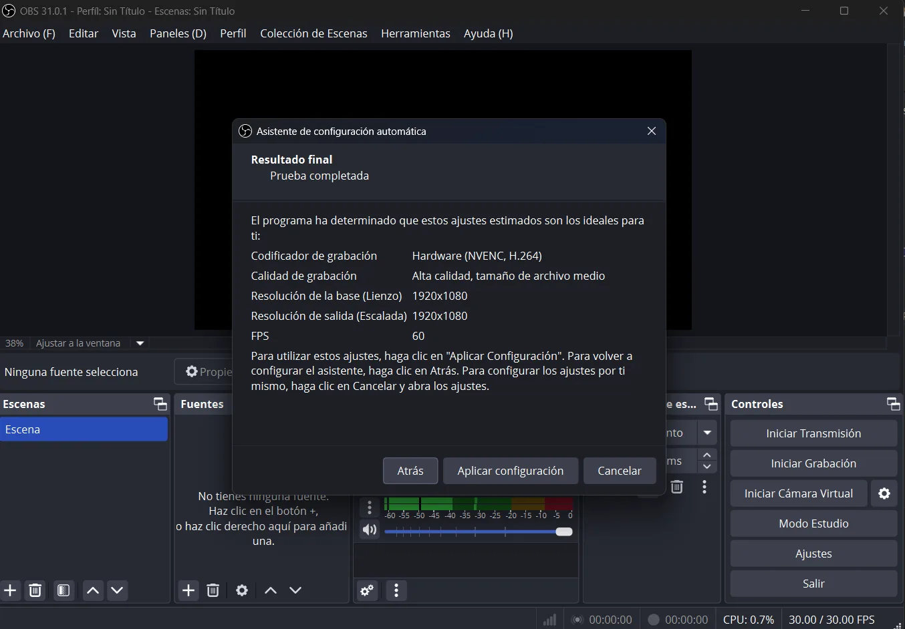
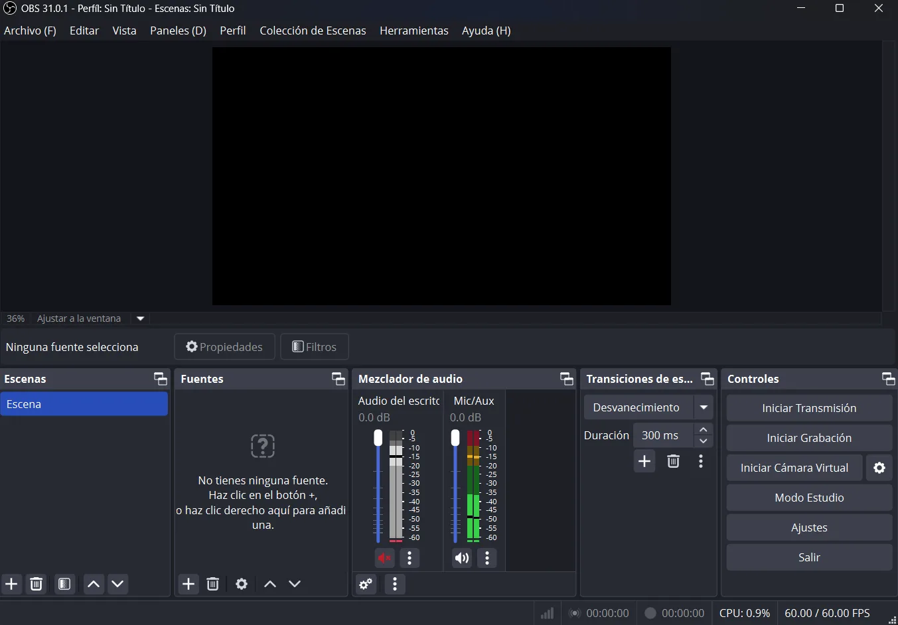
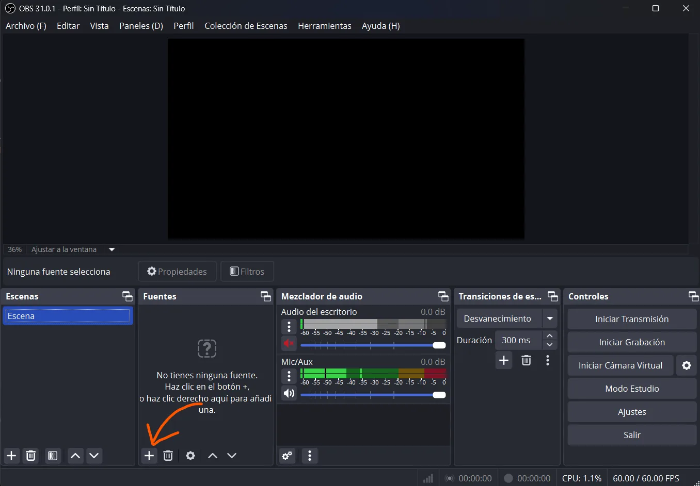
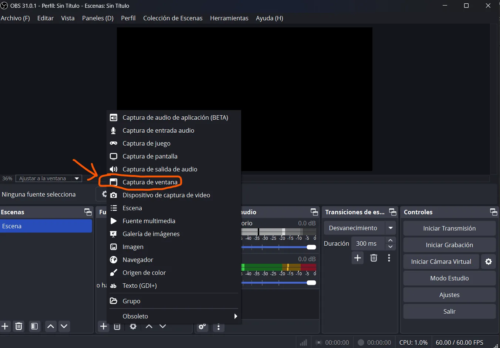
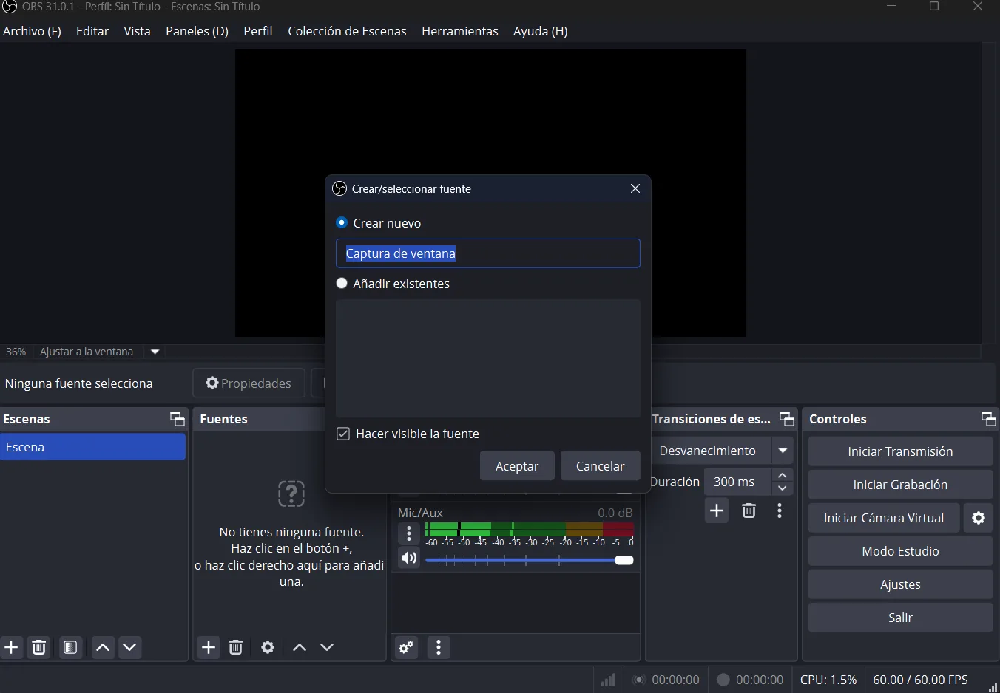
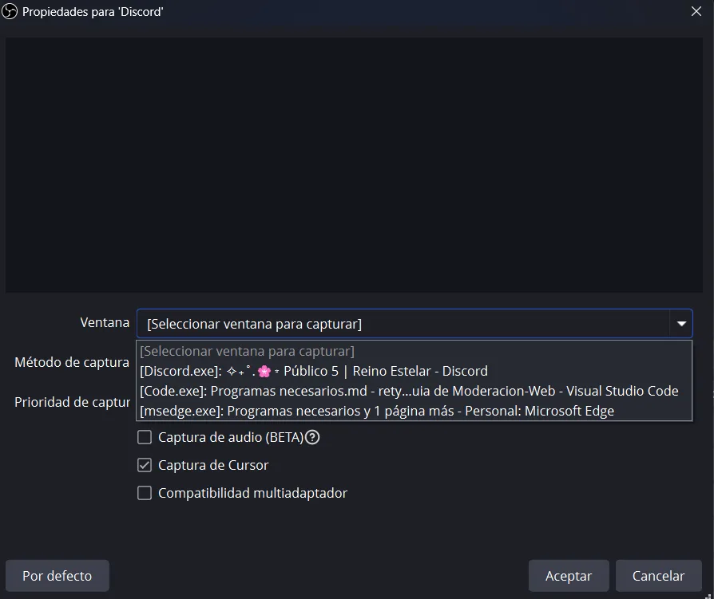
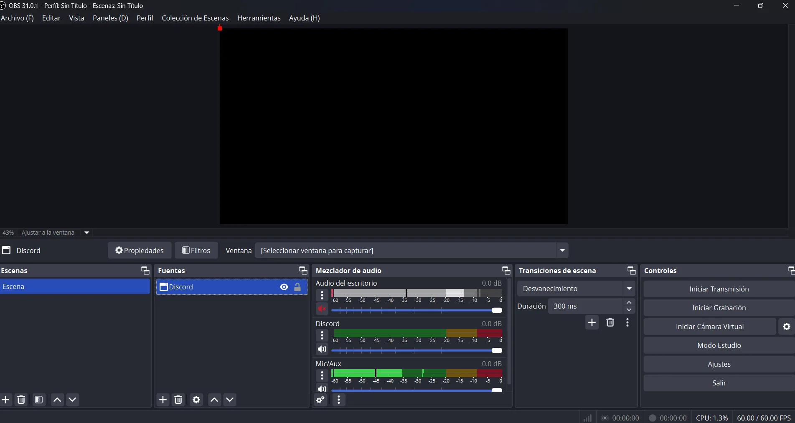

5.1.1 ❱ 🎥 OBS Studio

Bienvenido a la seccion de "programas necesarios", aqui podras ver los diversos programas que puedes utilizar para la moderacion, como tambien se agregara los links directos de descarga y sus requisitos minimos para poder usarlo. Tambien se agregara un mini tutorial de como empezar, asi que si eres nuevo puede servirte :D.
OBS Studio
Al unirte al equipo de moderación necesitaras ciertos programas para los casos que se lleguen a presentar en los "Canales de voz", ya que te permitirán proceder a dar las sanciones pertinentes. Aquí te comparto los programas que se recomiendan usar para grabar:
- OBS Studio se destaca por ser altamente personalizable y potente, ideal para streamers, creadores de contenido y gamers. No obstante, tendrás que "Configurar" si lo quieres utilizar para ser "Creador de Contenido" o tan solo para "Grabar". Aquí de abajo te dejo los requisitos mínimos para cada sistema operativo que podrías utilizar.
Los requisitos mínimos para OBS Studio son los siguientes:
- Sistema Operativo: Windows 10 o 11 (64 bits).
- Procesador: CPU con soporte para SSE4.2 (Intel Core i5-2000 o AMD FX-4300 mínimo).
- Memoria RAM: 4 GB (se recomiendan 8 GB o más).
- Tarjeta Gráfica: Compatible con DirectX 10.1 (mínimo Intel HD Graphics 4000).
- Sistema Operativo: macOS 11 (Big Sur) o superior.
- Procesador: Intel o Apple Silicon (M1/M2) con Rosetta 2.
- Memoria RAM: 4 GB (recomendado 8 GB o más).
- Gráficos: Compatible con Metal.
- Sistema Operativo: Ubuntu 20.04 o superior (otras distribuciones también pueden funcionar).
- Procesador: CPU con SSE4.2.
- Memoria RAM: 4 GB mínimo.
- Gráficos: Compatible con OpenGL 3.3 o superior.
Si te interesa descargarlo, aquí te dejo los links de las siguientes plataformas disponibles:
- Descargalo desde su pagina oficial: OBSProject
- Descargalo desde la Microsoft Store: OBS-Studio
- Descargalo desde Steam: OBS-Studio-Steam
Si necesitas configurar “OBS Studio” para grabar sesiones de moderación en Discord, aquí tienes una guía optimizada para grabar voz, pantalla y eventos importantes, sin consumir demasiados recursos.
- Al iniciar OBS Studio por primera vez aparecerá lo siguiente:

En esta parte tienes 3 opciones "Optimizara para transmisiones", "Optimizar solo para grabación" y "Usar solo la cámara virtual". Aquí nos concentraremos en la opción 2 que aparece en la imagen, ya que utilizaremos el OBS para grabar.
- Al darle "Siguiente" aparecera lo siguiente:

En la nueva ventana aparecera nuevas 2 opciones que seria la configuracion de la "Resolucion" y la cantidad de "FPS" (Fotogramas Por Segundo). OBS detectara automaticamente a cuanta "Resolucion" y "FPS" puede soportar tu "Laptop" o "PC".
- Al darle "Siguiente" apareceran los resultados completos de cuanta "Resolucion" y cantidad de "FPS" puedes grabar. Al ser todo ya puedes darle al boton "Aplicar configuracion"

- Ahora se quitara la ventana de la "Asistente de configuracion". Ahora nos podemos concentrar en como configurar tu OBS.

- Ahora, al tener todo listo, te vaz a al "+"

- Despues de darle click al "+" dale click al "Captura de ventana"

- Al darle click "Captura de ventana" aparece esta "Pestaña", aqui puedes nombrar como se podria llamar tu "Fuente". Te recomiedo que lo llames discord para que puedas distiguir facilmente que "Fuente utilizas".

- Al crear la "Fuente" aparecera 3 opciones: "Ventana", "Metodo de captura" y "Prioridad de captura". en la imagen hay una ventana llamada "[Discord.exe]:" lo tendras que seleccionar para capturar la ventana de "Discord"
Ojo. Aqui tendras que mantener abierto del "Discord" para que "OBS" lo detecte.
Tambien quiero recomendarte activar la funcion "Captura de Audio (Beta)" la opcion sirve para que separe tu audio de tu escritorio, asi podras distinguir mejor el audio.

- Te recomiendo desactivar el "Audio de Escritorio" ya que si lo tienes activado se podria escuchar todo el audio de tu computadora.
- El "Mic/Aux" es tu "Microfono", si deseas ajustar el nivel de audio puedes hacerlo en la linea "Azul"
- Si deseas cambiar el nombre de "Mic/Aux" a algo mas adecuado ve a: ":" y luego "Renombrar". Asi podras llamarlo como tu gustes :D.

- Por ultimo te explicare cada formato de video que puede generar "OBS".
Formatos de video en OBS Studio
MP4
- ✅ Ventaja: Compatible con la mayoría de reproductores y plataformas.
- ❌ Desventaja: Si la grabación se interrumpe (por un apagón o un fallo del programa), el archivo puede corromperse y perderse.
MKV
- ✅ Ventaja: Si la grabación se interrumpe, el archivo sigue siendo recuperable.
- ❌ Desventaja: No es compatible con todas las plataformas, por lo que muchas veces necesitarás convertirlo a MP4.
MOV
- ✅ Ventaja: Buena compatibilidad con programas de edición como Adobe Premiere y Final Cut.
- ❌ Desventaja: Similar al MP4, si la grabación falla, el archivo puede dañarse.
FLV
- ✅ Ventaja: Más resistente a pérdidas de datos en caso de interrupción.
- ❌ Desventaja: No es tan compatible con editores modernos y plataformas de video.
TS
- ✅ Ventaja: Baja latencia y buena resistencia a la pérdida de datos.
- ❌ Desventaja: Menos compatible con reproductores y editores.